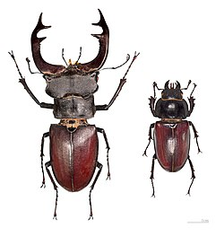

Dižā briežvabole (latīņu: Lucanus cervus) — vislielākā Eiropas vabole no briežvaboļu dzimtas.
Latvijā šī suga pēc atrašanas 1960. gadu beigās Ieriķu ciemā Gaujas nacionālajā parkā ilgstoši vairs nebija atrasta. 2021.
ā Dobeles apkaimē zem ozola privātmājas pagalmā atrasts miris šīs sugas tēviņš un ir ziņas, ka tās pastāvīgi dzīvo šajā teritorijā.
Tā ir oficiāli aizsargājama suga Latvijas teritorijā.
 Sākums Lielacu kamenes